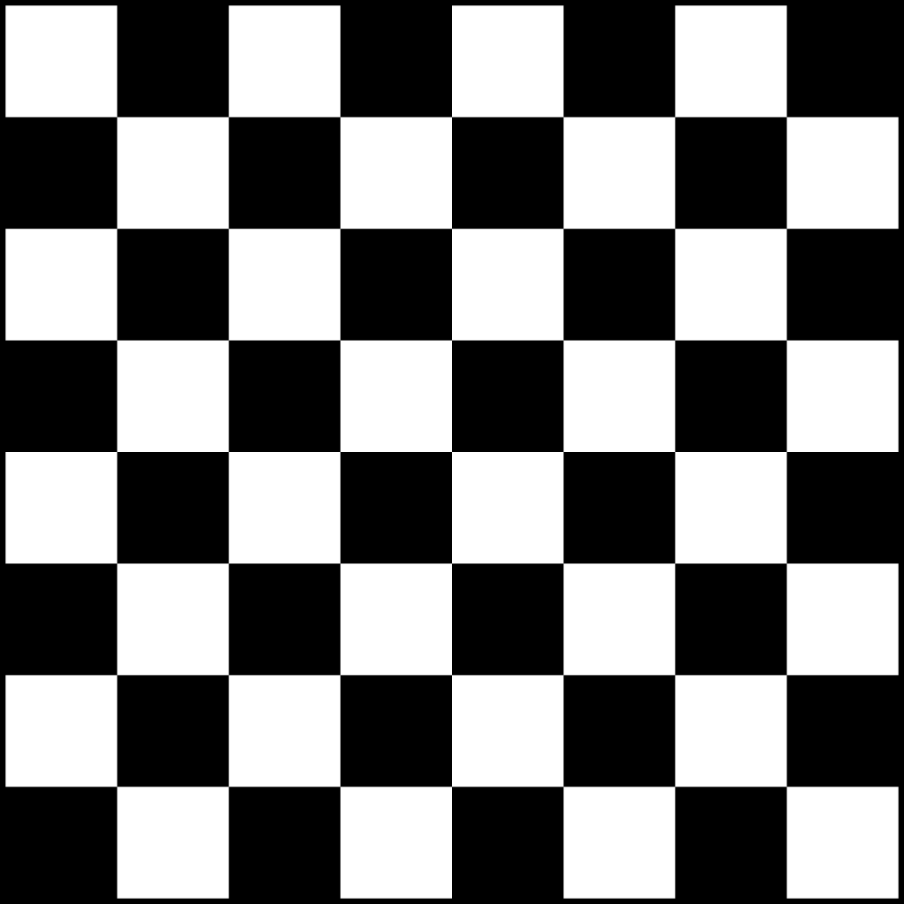

Rules of Chess
Chess is a two-player strategy game played on a checkered gameboard called a chessboard. The objective is to checkmate your opponent's king, putting it into a position where it is in check and there is no legal move to escape.
Basic Setup
The game is played on an 8x8 grid, with alternating black and white squares. Each player starts with 16 pieces: one king, one queen, two rooks, two knights, two bishops, and eight pawns. Here's how the pieces are arranged:
Movement of Pieces
Each type of chess piece has its own unique way of moving across the board. Here's a brief overview:
- King: Can move one square in any direction.
- Queen: Can move any number of squares diagonally, horizontally, or vertically.
- Rook: Can move any number of squares horizontally or vertically.
- Knight: Moves in an L-shape, two squares in one direction and then one square perpendicular.
- Bishop: Can move any number of squares diagonally.
- Pawn: Moves forward one square, but captures diagonally.
Checkmate
The game ends when one player's king is in a position to be captured (in check) and there is no legal move to escape (checkmate).
Here's a video explaining the rules in detail: